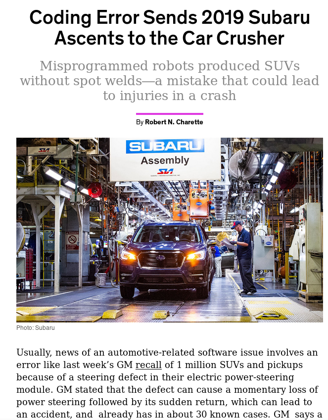

Faltas, Erros e Falhas
Os problemas enfrentados por sistemas computacionais podem ser classificados com base no nível em que se apresentam.
Faltas
No nível mais básico dos problemas a serem contornados temos as faltas (defect, fault, falha), que é um erro no desenvolvimento do sistema, como bugs ou defeitos de fabricação, que o leva a ficar diferente do que foi especificado, ou mesmo um erro na especificação.
Uma falta existe mesmo se for raramente ativada e mesmo se seus efeitos nunca forem percebidos.
Por exemplo, se o código tem um <= em vez de < na especificação de uma iteração, mas se uma condição faz com que a iteração seja interrompida antes, o código ainda tem uma falta.1
1 2 3 4 5 6 7 8 9 10 11 12 13 | |
Erro
No segundo nível, temos o erro (error), que é a manifestação da falta levando a algum comportamento indevido.
No exemplo acima, um erro seria quando a iteração passasse do ponto correto por causa do <=, por exemplo, na hora de escrever uma string em um array, estourando o limite do array na pilha mas sobrescrevendo uma variável que não seja mais usada.
O erro pode passar despercebido, mas ainda assim é um erro.
Falha
Finalmente, no terceiro nível, temos a falha (failure, defeito),2 um erro percebido pelo usuário. Continuando o exemplo, um stack overflow que leva a uma falta de segmentação, leva a uma falha.
Quando um componente manifesta uma falha, outros componentes que dele dependem internalizarão entradas indevidas, uma falta externa, o que levará seu próprio estado interno a estar errôneo e possivelmente também a manifestar uma falha. Esta cadeia pode levar a cenários catastróficos.
Falhas famosas
O Ariane 5 foi um foguete desenvolvido pela agência espacial europeia que explodiu durante o lançamento.
The Explosion of the Ariane 5
On June 4, 1996 an unmanned Ariane 5 rocket launched by the European Space Agency exploded just forty seconds after its lift-off [...] after a decade of development costing $7B. The destroyed rocket and its cargo were valued at $500M. [...] the failure was a software error [...] a 64 bit floating point number [...] was converted to a 16 bit signed integer. The number was larger than 32,767, the largest integer storeable in a 16 bit signed integer, and thus the conversion failed.
O erro gerado foi tratado como input, causando outros erros, que geraram instabilidade e que levou o sistema a se auto-destruir.
O avião 787 dreamliner, da Boeing, tem um problema que torna necessário reiniciar o sistema elétrico a cada 248 dias, ou o mesmo pode ter uma pane.
Quote
The plane’s electrical generators fall into a failsafe mode if kept continuously powered on for 248 days. The 787 has four such main generator-control units that, if powered on at the same time, could fail simultaneously and cause a complete electrical shutdown.
Segundo as "más línguas", o problema é que acontece um overflow em um contador de tempo
Quote
248 days == 2^31 100ths of a second.
— Fiora @ 日本語でFF14 (@FioraAeterna) May 1, 2015
even in 2015, our airplanes have integer overflow bugs https://t.co/6Z8d4y9gjM
O Boeing 737 Max é uma modificação do 737 original em que os motores maiores foram usados sem modificar a estrutura do restante do avião, alterando assim o seu centro de massa. Por causa dessa diferença, o avião pode subir rápido demais, correndo o risco de perder sustentação. Para auxiliar os pilotos e evitar a necessidade de treinamento específico, um sensor é usado para detectar se o avião está nessa situação e forçar o nariz do avião para baixo para corrigir o problema. Contudo, no 737 Max apenas um sensor é usado e no caso de falha do mesmo, o avião é forçado para baixo e em direção ao solo, o que levou à morte de centenas de pessoas.3
Em 2018 a Subaru fez um recall gigante, de mais de 1 milhão de unidades de um de seus modelos de SUV, porque uma falha em um software fez com que soldagens fossem feitas incorretamente no chassi dos veículos. O erro era irreparável, levando a grandes prejuízos.

Quando falhas aparecem, é importante identificar suas causas, isto é, a cadeia de eventos que os levaram a acontecer. Algumas empresas até publicam as root cause analysis ou a análise post-mortem para a comunidade como forma de compartilhar conhecimento e também por questões de transparência, mas mais importante, conhecer a causa pode ajudar a evitar que novas instâncias da mesma falha ou de falhas similares ocorram. 4
Classes de Faltas
Faltas são um fato da vida, uma constante no desenvolvimento de sistemas, mas se precisamos lidar com elas, prevenindo e tolerando sua presença, precisamos entender como se manifestam e, para isso, uma classificação é essencial.
Quebra
Falta de quebra (crash) são faltas em que o componente para de funcionar, irreversivelmente. Uma vez que o componente cessa seu funcionamento, qualquer comunicação com o mesmo é interrompida e pode dar bons indicativos do defeito aos outros componentes.
Alguns sistemas, denominados fail-stop, forçam-se a parar de funcionar quando percebem uma falha, imitando uma quebra, e implementando um comportamento fail-fast.5 Estes sistemas podem emitir um "canto do cisne" para permitir que outros componentes detectem a falha.
Após pararem, alguns sistemas podem aplicar passos de recuperação e voltar a funcionar, no que é denominado fail-recover. Ao retornar à operação, o processo poderia assumir uma nova identidade, mas se mantiver a anterior, pode ser forçado a recuperar o estado em que estava logo antes do problema se manifestar, precisando, para isso, da capacidade de armazenar estado.
Omissão
Em uma falha de omissão (omission failure), um componente deixa de executar alguma ação. Por exemplo, uma requisição recebida por um servidor não é processada, um disco não armazena os dados no meio magnético, ou uma mensagem não é transmitida. Este tipo de falha é difícil de ser identificado pois outros componentes não necessariamente têm acesso direto ao resultado da operação. Por exemplo, se o meio de comunicação se recusou a entregar uma mensagem, então houve uma falha de omissão. Mas se a mensagem é retransmitida até que tenha sua entrega confirmada, então a falha de omissão é mascarada como um simples atraso na comunicação, o que também pode ser uma falha.
Temporização
Em sistemas em que há limites de tempo para a execução de ações, uma violação destes limites é uma falha de temporização. Por exemplo, se o meio de comunicação se recusou a entregar uma mensagem, então houve uma falha de omissão. Novamente considerando problemas de transmissão de mensagens, se o meio de comunicação se recusou a entregar uma mensagem que deveria ser entregue dentro de 3ms, então houve uma falha de omissão. Mas se a mensagem é retransmitida até que tenha sua entrega confirmada, mas a mesma é entregue com 5ms, então o defeito é mascarado como uma falha de temporização. Falhas de temporização podem acontecer devido a problemas de sincronização de relógios, como no algoritmo de difusão totalmente ordenada visto anteriormente.
Arbitrários
Uma falta arbitrária ou bizantina é uma na qual qualquer comportamento pode acontecer. Por exemplo, uma mensagem pode ser modificada, um servidor pode reiniciar-se constantemente, todos os dados podem ser apagados, ou acesso pode ser dado a quem não é devido. Estas faltas podem ser causadas por faltas no software, no hardware, ou até mesmo por agentes mal intencionados, como hackers e vírus.
Hierarquia
Os tipos de faltas apontadas acima podem ser hierarquizados como a seguir, o que quer dizer que uma quebra é apenas uma omissão por tempo infinito:
Fail-stop \(\subset\) Quebra \(\subset\) Omissão \(\subset\) Temporização \(\subset\) Arbitrária
Falhas intermitentes
Algumas faltas fogem à classificação acima por terem um comportamento especial, se manifestando de forma intermitente, por causa de eventos esparsos como picos de energia, ou pelo comportamento emergente da interação com outros sistemas. Para capturar estas idiossincrasias, recorremos a uma outra classificação, bem informal.
Tipos de bugs
A BohrBug is just your average, straight-forward bug. Simple like the Bohr model of the atom: A smallsphere. You push it, it moves. BohrBugs are reproducible, and hence are easily fixed once discovered. These are named after Niels Bohr, who proposed a simple and easy-to-understand atomic model in 1913. In Bohr’s model, things like the path and momentum of an electron in an atom are predictable.
A bug that disappears or alters its behavior when one attempts to probe or isolate it. No matter how much time and effort is spent trying to reproduce the problem, the bug eludes us. Such bugs were named Heisenbugs, after Werner Heisenberg, who is known for his “uncertainty principle”. According to his theory, it is not possible to accurately or certainly determine the position and velocity of an electron in an atom at a particular moment.
When the cause of the bug is too complex to understand, and the resulting bug appears chaotic, it is called a Mandelbug. These are named after Benoît Mandelbrot, who is considered the father of fractal geometry (fractals are complex, self-similar structures). A bug in an operating system that depends on scheduling is an example of a Mandelbug.
Sometimes, you look into the code, and find that it has a bug or a problem that should never have allowed it to work in the first place. When you try out the code, the bug promptly shows up, and the software fails! Though it sounds very uncommon, such bugs do occur and are known as Schroedinbugs. They are named after the scientist Erwin Schrödinger, who proposed that in quantum physics, quantum particles like atoms could exist in two or more quantum states.
A bug, after which its resolution is found, reveals additional self-similar bugs elsewhere in the code, after which they are fixed, likewise appear elsewhere still.
Como lidar com faltas?
Mas se o objetivo é ter um sistema que esteja funcional a despeito de problemas, precisamos de formas de lidar com faltas, prevenindo, removendo e tolerando-as.
Prevenção
A prevenção de faltas acontece por meio de técnicas bem estabelecidas de engenharia. No caso de sistemas de software, modularização, uso de linguagens de programação fortemente tipadas e encapsulamento são passos importantes. Outras técnicas envolvidas na prevenção de faltas são análise estática, especificação formal, teste e prova destas especificações. Por exemplo, diversas empresas usam linguagens como TLA\(^+\)6 e Promela, associados a verificadores de modelo como TLC e Spin, respectivamente, para testar e verificar a corretude de seus algoritmos.
Remoção
Mesmo uma especificação correta pode produzir um sistema com faltas pois a tradução de especificações formais para código é um passo complexo. Testes e manutenção do sistema permitem a remoção de faltas que passarem despercebidas pelas tentativas de prevenção.
Tolerância
Testes, contudo, apenas aumentam a confiança no sistema, não sendo capazes de certificar a ausência de problemas. Assim, tenta-se desenvolver os sistemas de forma que, mesmo se faltas ainda estiverem presentes, seus efeitos não sejam percebidos como falhas, isto é, sistemas que tenham tolerância a faltas (ou prevenção de falhas).
Para se alcançar tolerância a faltas é necessário detectar e se recuperar de erros. Por exemplo, um sistema de arquivos que mantenha um journal, como o Ext v3, armazena informação de forma redundante e, quando detecta que os dados em sua forma principal estão corrompidos, usa o journal para recuperar os dados, mascarando o erro.
De acordo com Avizienis et al.,7 temos as seguintes técnicas para tolerar faltas:
Um sistema que sofra de falhas recorrentes é um bom candidato a previsão de falhas, em que se estima quando uma falha ocorrerá baseado no histórico. Por exemplo, um sistema que sofra falha por uso excessivo de memória a cada dez dias em uso, pode ser reiniciado no nono dia, em condições controladas, para evitar problemas maiores enquanto a razão do uso excessivo de memória é corrigido.
Degradação Graciosa
Se remover todas as possibilidades de falhas de um componente é algo difícil, ao tolerar faltas permitimos que o sistema continue funcional ainda que de forma degradada, o que denominamos uma degradação graciosa (do inglês graceful degradation).
Quando não for possível tolerar a falha, o sistema será quebradiço (do inglês brittle). Neste caso, pode ser melhor fazer com o que o sistema pare de funcionar ao primeiro sinal de problema, falhando rapidamente (do inglês fail-fast) e evitando que erros se propagem.
Redundância
De forma geral, qualquer processo para melhorar um sistema demandará redundância. Para prevenir faltas, redundância de tempo para refinar projetos. Para removê-las, redundância de tempo e recursos para executar mais testes. Para lidar com erros, redundância de código, seja código para tratamento de exceções seja para replicar componentes. Por exemplo, pense no pneu estepe de um carro, no gerador de eletricidade de um hospital. Replicação permite remover os pontos únicos de falha (SPOF, Single Point of Failure). Seja como for, redundância implica em mais custos, então o grau de redundância a ser utilizado depende de uma análise custo x benefício. No caso de um sistema distribuído, quando falamos em redundância, normalmente falamos em processos redundantes, cópias ou réplicas. Assim, com múltiplas cópias, quando um processo apresenta um defeito, outro podem continuar executando o serviço.
Correlação entre faltas
TODO
Mover este texto para cima, para antes do gancho para replicação.
Algumas faltas são ativadas por entradas e, neste caso, mesmo que se tenha várias cópias do mesmo sistema, todas apresentarão erros uma vez que a entrada problemática acontecer. Este é um cenário em que as falhas não são independentes, mas correlatas. Para tentar evitá-lo, podemos usar técnicas como o n-version programming, que consiste basicamente em ter múltiplas implementações do mesmo sistema desenvolvidas de forma independente, isto é, fazendo uso de um ou mais da seguintes opções:
- múltiplos times
- múltiplos sistemas operacionais
- múltiplas linguagens de programação.
Esta técnica é interessante, mas raramente utilizada devido ao seu alto custo e por não ser garantia de sucesso, pois, por exemplo, erros de especificação se reproduzem em todas as implementações e múltiplas versões podem ser igualmente faltosas.
-
Você pode pensar que "falta corretude" no software como maneira de se lembrar do termo. ↩
-
Observe que o termo falha é usado em dois lugares. Isso é basicamente um problema de tradução da nomenclatura em inglês, fault-error-failure que levou a uma hierarquia mais comum falha-erro-defeito e outra mais correta falta-erro-falha. Os adeptos da primeira falam em tolerância a falhas, enquanto os da última falam em tolerância a faltas. ↩
-
Boeing 737 Max: why was it grounded, what has been fixed and is it enough? ↩
-
Post-mortems para uma extensa lista de análises. ↩
-
Basic Concepts and Taxonomy of Dependable and Secure Computing ↩